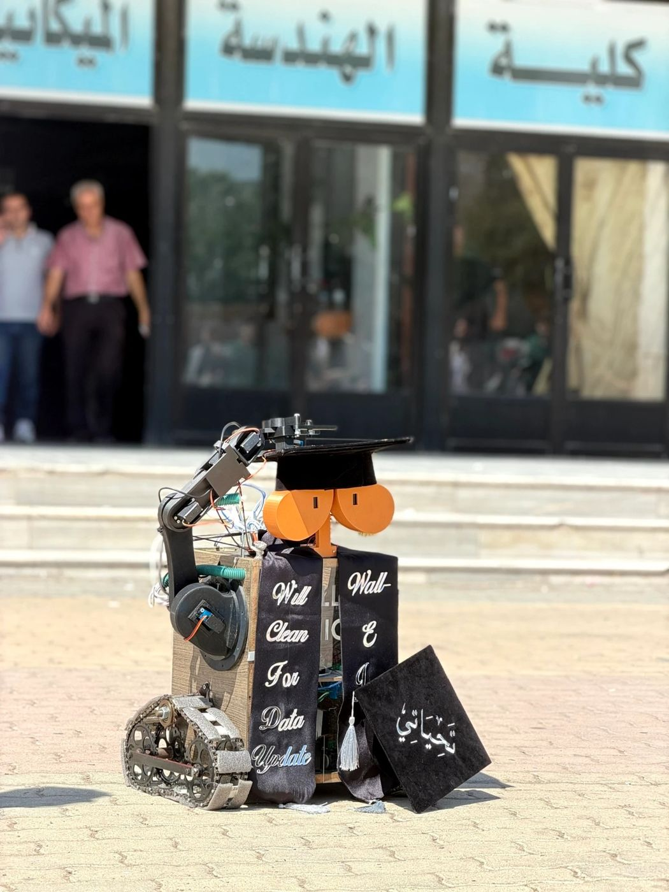
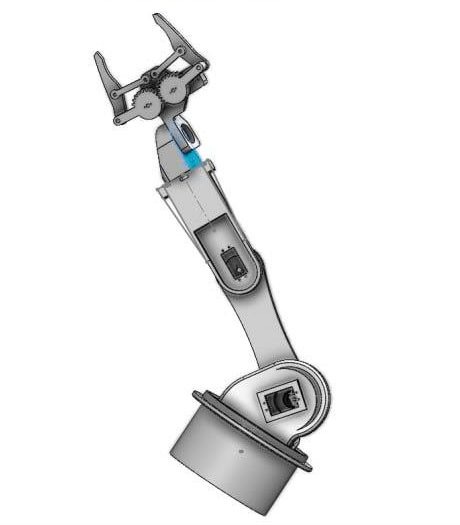
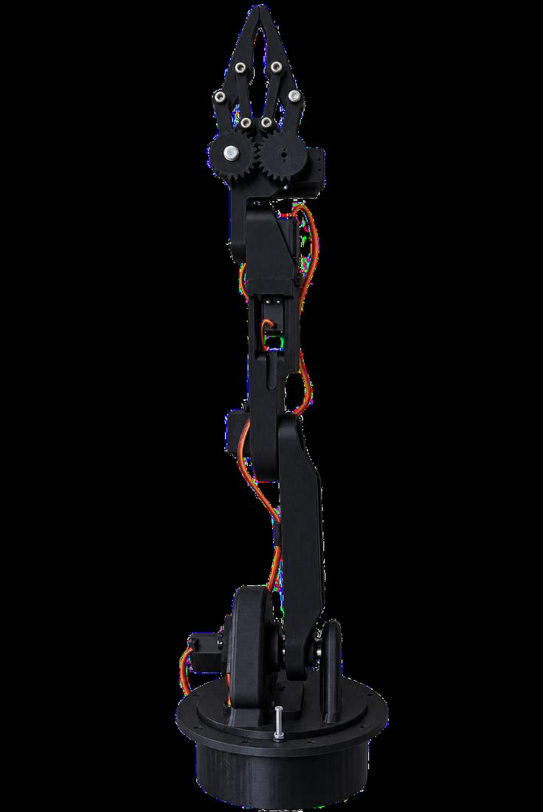
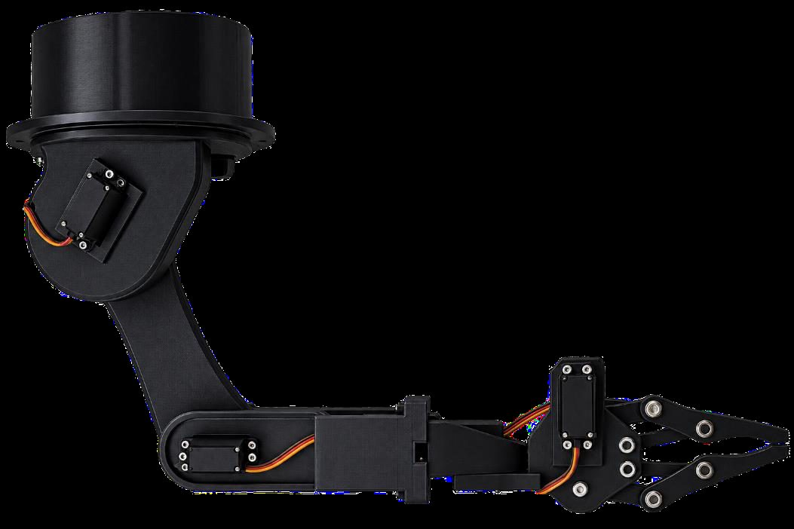
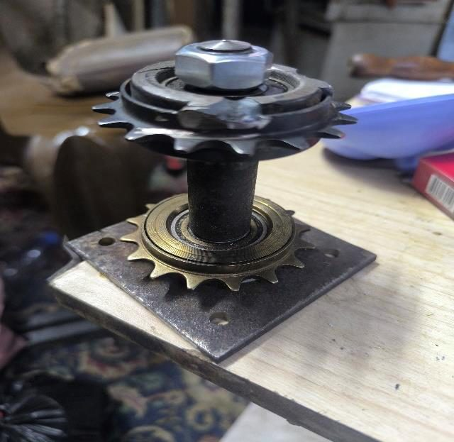
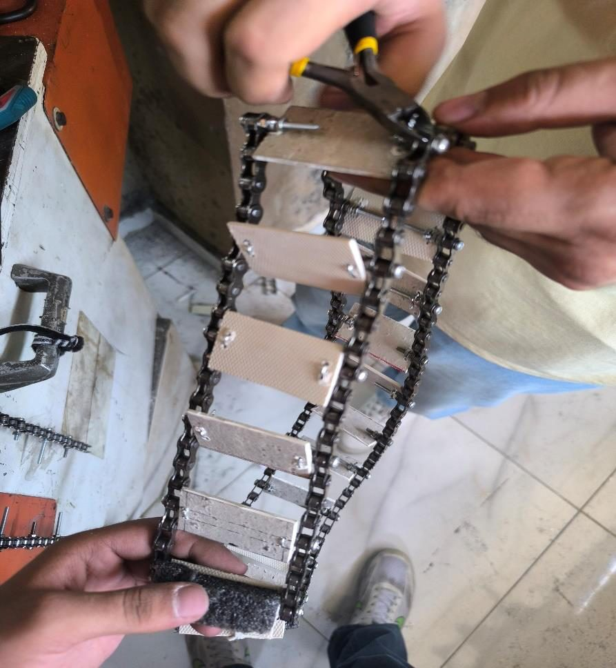
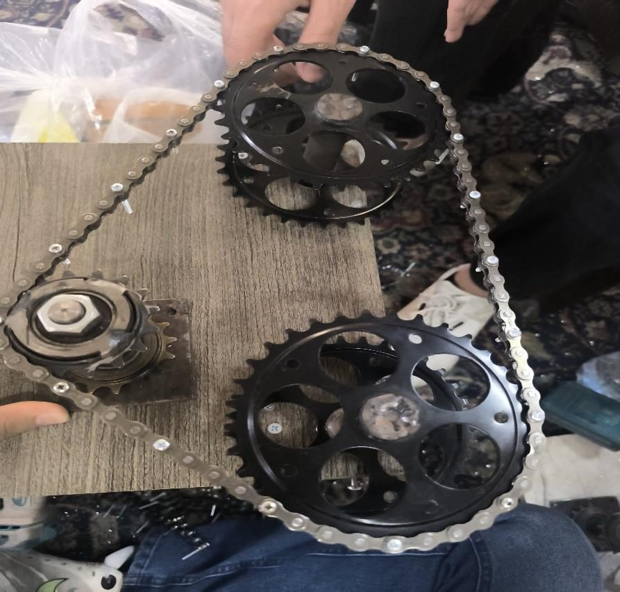
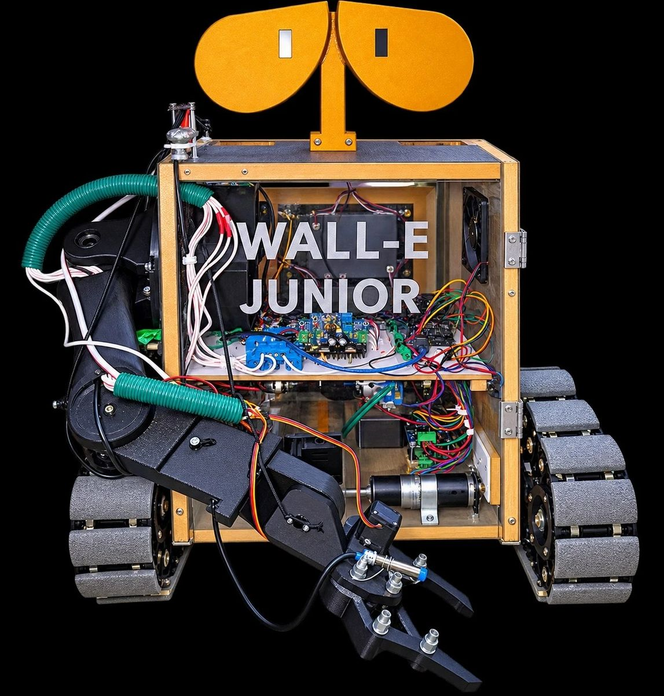

HomeالرئيسيةWALL-E JuniorWALL-E Junior
Graduation project · Homs University · 2025–2026مشروع التخرج · جامعة حمص · 2025–2026
WALL-E JuniorWALL-E Junior
Autonomous robotic system for waste sorting using a robotic arm, computer vision and deep learning.نظام روبوتي ذاتي القيادة لفرز النفايات باستخدام ذراع روبوتية وتقنيات الرؤية الحاسوبية والتعلم العميق.

Sorting waste at the source still depends almost entirely on people, which makes it slow and inconsistent. WALL-E Junior is our answer: a tracked robot that searches an indoor space for waste, recognises each item with a YOLOv8 model, picks it up with a 5-DOF arm and drops it into the matching bin, with no one stepping in.ما زال فرز النفايات عند المصدر يعتمد بالكامل تقريباً على الإنسان، فيأتي بطيئاً وغير متّسق. WALL-E Junior هو حلّنا: روبوت على جنازير يجوب مكاناً داخلياً بحثاً عن النفايات، يتعرّف على كل جسم بنموذج YOLOv8، ثم يلتقطه بذراع خماسية درجات الحرية ويضعه في الحاوية المطابقة، دون تدخّل بشري.
We gave it the look of the film robot on purpose. A friendly shape turns a technical task into something children want to watch, so the robot works as a small campaign for recycling as well as a machine. It was a team project of four students in the Mechatronics Department.اخترنا له شكل روبوت الفيلم عن قصد، فالشكل المحبّب يحوّل مهمة تقنية إلى شيء يحب الأطفال مشاهدته، فيصبح الروبوت حملة صغيرة لإعادة التدوير إلى جانب كونه آلة. نفّذنا المشروع فريقاً من أربعة طلاب في قسم الميكاترونيك.
My part in the teamدوري في الفريق
- Computer visionالرؤية الحاسوبيةThe YOLOv8 model that detects the waste and sorts it into four classes, running on the Raspberry Pi 5.نموذج YOLOv8 الذي يكتشف النفايات ويصنّفها إلى أربع فئات، ويعمل على Raspberry Pi 5.
- Arm designتصميم الذراعThe 5-DOF arm, from the parts to the full assembly in SolidWorks.الذراع خماسية درجات الحرية، من القطع حتى التجميع الكامل على SolidWorks.
- Robot designتصميم الروبوتThe body and overall layout of the robot in SolidWorks.جسم الروبوت وتوزيع مكوّناته على SolidWorks.
- 1Robotic armالذراع الروبوتية
5-DOF arm designed in SolidWorks, driven by six MG996R servos (five joints and the gripper) through a PCA9685 board. Bearings at the base and shoulder joints take the load off the servo shafts.ذراع خماسية درجات الحرية صُمّمت على SolidWorks، تحرّكها ستة محركات سيرفو MG996R (خمسة للمفاصل وواحد للملقط) عبر لوحة PCA9685. وأُضيفت رولمانات لمفصلَي القاعدة والكتف لتخفيف الحمل عن أعمدة المحركات.
- 2Gripper and metal checkالملقط والتحقق من المعدن
Two-jaw gripper with an LJ12A3-4-Z/BX inductive sensor between the jaws. When the camera calls an item metal, the sensor has to confirm it once the jaws close.ملقط بفكّين بينهما حساس تقارب حثّي LJ12A3-4-Z/BX. عندما تصنّف الكاميرا الجسم معدناً، يجب أن يؤكّده الحساس بعد إغلاق الفكّين.
- 3Compute and visionالحوسبة والرؤية
A Raspberry Pi 5 (4 GB) runs ROS 2 and a YOLOv8 Medium model on frames from a Pi Camera Module 3 on the lower shelf, in the middle of the motor deck, looking out through the front. An Arduino UNO drives the motors, servos and sensor over USB serial.يشغّل Raspberry Pi 5 (4 GB) نظام ROS 2 ونموذج YOLOv8 Medium على صور كاميرا Pi Camera Module 3 مثبّتة على الرف السفلي في منتصف رف المحركات، تنظر إلى الأمام. ويتولّى Arduino UNO المحركات والسيرفو والحساس عبر اتصال تسلسلي USB.
- 4Driveنظام الحركة
Tracks built from bicycle chains and sprockets with bolted tread plates, turned by four 12 V, 100 rpm gear motors (two per side) through two IBT-2 (BTS7960B) drivers, with an encoder and a PID speed loop on each side.جنازير مبنية من سلاسل وتروس دراجات هوائية مع دواسات مثبّتة بالبراغي، تديرها أربعة محركات 12 فولت و100 دورة/دقيقة مع علب تخفيض (اثنان لكل جهة) عبر قيادتين IBT-2 (BTS7960B)، مع مشفّر وحلقة تحكم PID بالسرعة لكل جهة.
- 5Body and powerالهيكل والطاقة
A wooden body chosen for cost, with higher-torque motors to carry its weight. Two separate Li-ion packs, each with its own BMS: 2S for the logic (5 V, 5 A) and 3S2P (about 11.1 V) for the motors and servo supplies. An aluminium plate shields the Pi from motor-driver interference.هيكل خشبي اختير لانخفاض كلفته، مع محركات بعزم أعلى لحمل وزنه. حزمتا بطاريات ليثيوم منفصلتان لكلٍّ منهما وحدة BMS: حزمة 2S للدارات المنطقية (5 فولت، 5 أمبير) وحزمة 3S2P (نحو 11.1 فولت) للمحركات وتغذية السيرفو. وتحمي صفيحة ألمنيوم الـ Raspberry Pi من تشويش قيادات المحركات.
Test resultsنتائج الاختبار
Measured on the assembled robot: one run of 20 mixed items on a 4 m² working area.قِيست على الروبوت بعد تجميعه: تجربة على 20 قطعة متنوعة في مساحة عمل 4 م².
The 20 test itemsقطع الاختبار العشرون
- Size (W × D × H)الأبعاد (عرض × عمق × ارتفاع)
- 50 × 45 × 65 cm50 × 45 × 65 سم
- Arm reachمدى وصول الذراع
- 30 cm in front of the robot30 سم أمام الروبوت
- Heaviest item it can pickأثقل جسم يمكن التقاطه
- 200 g200 غ
- Batteryالبطارية
- 20 min of active work, or 12 h searching and idle20 دقيقة عمل فعلي، أو 12 ساعة في حالة البحث والسكون
How it worksدورة العمل
A ROS 2 task manager runs the whole job as a state machine: one item per cycle, then it starts again.يدير مدير مهام على ROS 2 العمل كلّه كآلة حالات: جسم واحد في كل دورة، ثم تبدأ الدورة من جديد.
SEARCHINGDrives and scans for wasteيتجوّل ويبحث عن النفاياتDETECTEDLocates the item on the floorيحدّد موضع الجسم على الأرضREPOSITIONINGTurns in place, then drives straightيستدير في مكانه ثم يتقدّم مستقيماًSTOPPEDHalts before the arm movesيتوقف قبل أن تتحرك الذراعGRASPINGInverse kinematics, then the pickحركية عكسية ثم الالتقاطVERIFYING_METALSensor confirms a "metal" callالحساس يؤكّد تصنيف «معدن»SORTINGDrops it in the matching binيضعه في الحاوية المطابقةRETURNINGBack to the ready poseيعود إلى وضعية الاستعداد
Two more states handle exceptions. If the sensor rejects "metal", RECLASSIFYING takes the next most likely class from the same YOLO output, or sends the item back to the search. Any error or timeout enters FAULT, which stops all motion at once.حالتان إضافيتان للاستثناءات: إذا رفض الحساس تصنيف «معدن» تأخذ RECLASSIFYING الفئة الأعلى احتمالاً التالية من مخرجات YOLO نفسها، أو تعيد الجسم إلى البحث. وأي عطل أو انتهاء مهلة يدخل FAULT التي توقف كل حركة فوراً.
System architectureبنية النظام
High level · ROS 2المستوى العالي · ROS 2
Raspberry Pi 5VisionYOLOv8 Medium, 640 × 640, four classesYOLOv8 Medium بدقة 640 × 640، أربع فئاتLocalizationPixel ray to a floor point, then to the robot frameمن البكسل إلى نقطة على الأرض ثم إلى إطار الروبوتTask ManagerRuns the state machine aboveيشغّل آلة الحالات أعلاهMotion ControllerTurn and drive commandsأوامر الدوران والتقدّمArm ControllerDenavit–Hartenberg model and inverse kinematicsنموذج دينافيت–هارتنبرغ والحركية العكسيةMetal Sensor DecisionConfirms or rejects "metal"تأكيد تصنيف «معدن» أو رفضهArduino CommFrames the serial messagesتأطير الرسائل التسلسلية
Input: Pi Camera Module 3الدخل: Pi Camera Module 3
Low level · no ROSالمستوى المنخفض · دون ROS
Arduino UNOTracksPID per side, 2 encoders, 2× IBT-2 to 4 DC gear motorsPID لكل جهة، مشفّران، وقيادتا IBT-2 لأربعة محركات DCArmPCA9685 over I²C to 6× MG996RPCA9685 عبر I²C لستة محركات MG996RSensorLJ12A3-4-Z/BX inductive, NPN outputحساس حثّي LJ12A3-4-Z/BX بمخرج NPN
Powerالطاقة
2S + BMS5 V, 5 A for the Pi and the Arduino5 فولت، 5 أمبير للـ Pi والـ Arduino3S2P + BMSAbout 11.1 V to the motor drivers, plus two 6 V, 8 A buck converters for the servosنحو 11.1 فولت لقيادات المحركات، ومحوّلان خافضان 6 فولت، 8 أمبير للسيرفو
From CAD to robotمن التصميم إلى التنفيذ
The arm went from a SolidWorks assembly to the finished part. The tracks were built by hand from bicycle chains and sprockets.انتقلت الذراع من تجميع على SolidWorks إلى قطعة منفّذة، وبُنيت الجنازير يدوياً من سلاسل دراجات هوائية ومسنّناتها.







